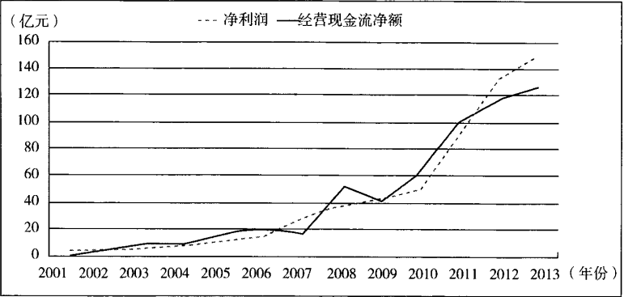
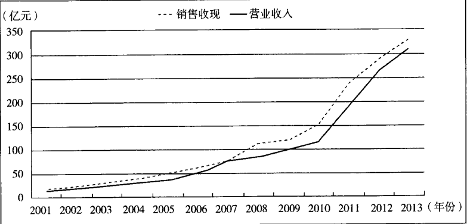
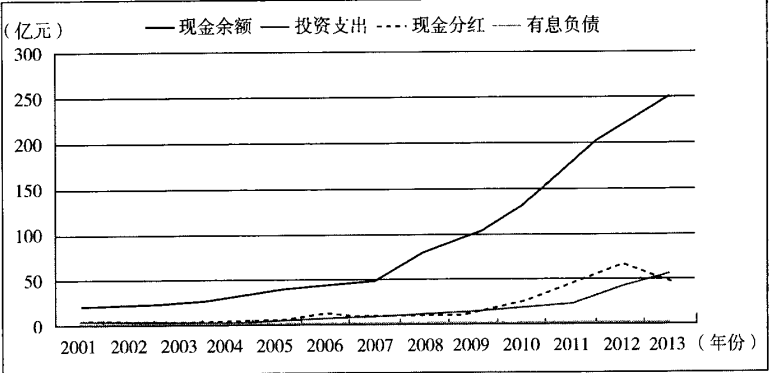

现金流量表速读
一、现金流量表的阅读重点
1.1 造假为何较少，但绝非没有
现金流量表相比另外两张报表，具有天然的"防伪"特性：
| 对比对象 | 现金流量表的特点 |
|---|---|
| 相比资产负债表 | 科目少且简单 |
| 相比利润表 | 受现金期初余额与期末余额双重限制，造假成本高 |
现金流量表的造假主要有三种情况：
短期挪用
控股股东或管理层期间挪用上市公司现金，于报表日前归还。
一次性美化
借用一次性行为美化当期现金流。
活动错配
抓住投资者更关注经营活动现金流量净额的特性，将投资、筹资活动的现金流入伪装成经营活动现金流入；或将经营活动现金流出伪装成投资、筹资活动现金流出。
不要低估某些无耻企业的下限。我国上市公司中，真有通过伪造银行收款单、询证回复函（银行回复会计师事务所的类似对账单的文件）等手段，直接虚构账面现金余额的。造假的具体手法及财报痕迹，详见第八章"欺诈与反欺诈"。
1.2 打开报表先看什么
打开现金流量表时，应遵循两个要点：
关注合并现金流量表
母公司现金流量表仅代表公司内部的资金调动，对投资者的观察价值不大。
关注异常信息
现金流量表传达的异常信号，往往比正常数据更有价值。
二、三大活动中的异常现象
2.1 经营活动现金流量中的异常
| 异常现象 | 潜在含义 |
|---|---|
| 持续的经营活动现金流净额为负 | 主业自身无法产生正向现金流 |
| 净额虽为正，但主要靠应付账款、应付票据增加 | 可能是大量拖欠供应商货款，是资金链断裂前的异常征兆 |
| 经营活动现金流净额远低于净利润 | 提示需关注企业利润的真实性 |
2.2 投资活动现金流量中的异常
（1）投资支出持续高于经营现金流净额
购买固定资产、无形资产等的支出，持续高于经营活动现金流量净额，说明企业持续借钱维持投资行为。将心比心，只有两种可能：
无敌信心
某项目给了管理层无敌的信心，笃定回报远超投入。
被迫流出
某种特殊原因迫使企业必须流出现金——这通常是营业收入造假和利润造假的资金源头。
若投资者找不到"无敌信心"的来源，可能就要选择后一假设。
（2）投资流入主要靠变卖长期资产
投资活动现金流入中，若有大量现金来自出售固定资产或其他长期资产，这可能是企业经营能力衰败的标志，是业绩进入下滑跑道的信号灯。
2.3 筹资活动现金流量中的异常
（1）"借新还旧"落空，银行抽贷
企业明明需要大量资金时，却出现"取得借款收到的现金，远小于归还借款支付的现金"。这可能透露银行降低了对该企业的贷款意愿，甚至使用了"骗"回贷款的手段。
结果：唐老板借高利贷还了银行贷款，银行却不断遇到"意外情况"，续贷之说不了了之，杳无音讯。
这种"骗还贷"行为，可能意味着企业出现了某种圈内人士才知道的危机。
（2）为筹资支付超高利息或中间费用
企业支付显然高于正常水平的利息或中间费用，体现在以下两个科目的明细里：
分配股利、利润或偿付利息支付的现金
利息支出显著偏高，说明融资成本异常。
支付其他与筹资活动有关的现金
可能存在高额中间费用或其他隐性融资成本。
这可能意味着企业遭遇了必须江湖救急的生存危机。
在任何科目里发现异常，都要动用"搜索大法"——先在报表附注中寻找明细解释，必要时进一步致电公司证代或董秘寻求答案。
三、如何通过现金流量表寻找优质企业
搞定异常情况后，即可对照上一节的八张肖像图，判断企业属于哪种类型，并关注对应类型的要点。
老唐认为，寻找优质企业只需关注以下 5 组数据（原因均已在前文谈过，这里只列基本条件）：
| 序号 | 基本条件 | 可放宽标准 |
|---|---|---|
| 1 | 经营活动产生的现金流量净额 > 净利润 > 0 | —— |
| 2 | 销售商品、提供劳务收到的现金 ≥ 营业收入 | —— |
| 3 | 投资活动现金流出 > 投资活动现金流入，且主要用于扩张而非维持原有盈利能力 ① | —— |
| 4 | 现金及现金等价物净增加额 > 0 | 排除当年现金分红影响后，现金及现金等价物净增加额 > 0 |
| 5 | 期末现金及现金等价物余额 ≥ 有息负债 | 期末现金及现金等价物 + 可迅速变现的金融资产净值 > 有息负债 |
① 需剔除投资现金流里理财产品的滚动买入和滚动到期。
以上因素不可只看某一年的财报。衡量标准是"数年持续如此"或"数年累计数如此"。因此，需要阅读并统计该公司历年财报，越多越好。
四、现金流量表应该这样读
以贵州茅台为例，阅读现金流量表时，至少应自制以下三张图进行观察：
4.1 图 4-3-1：经营活动现金流量与净利润对比（2001—2013 年）

净利润含金量
经营现金流净额是否为正、是否持续增长，以及净利润的含金量如何。
波动因素
这张图里两条线之间的波动，主要由什么因素造成？
4.2 图 4-3-2：销售商品、提供劳务收到现金与营业收入对比（2001—2013 年，单位：亿元）

营业收入的增长是否正常，营收的增长是否通过放宽销售政策（如放宽赊销）来达到。
4.3 图 4-3-3：现金余额、投资支出、现金分红与有息负债对比（2001—2013 年）

现金支撑能力
公司的现金是否足以支撑投资和筹资活动。
现金来源合理性
加入资产负债表中的有息负债数据后，可进一步判断公司支撑投资和筹资活动的现金来源是否合理。